Входил. Выходил. Проверял.
Кузьмич ходил по квартире, заходил, уходил и заглядывал в комнаты. Маршрут не согласовывался. Проверяющий был один, зато с полным доступом.
ДОМАШНИЙ АРХИВ
ЗАПОРОЖЬЕ БОЛЕЕ 15 ЛЕТ
личное дело · без срока хранения
Главный по квартире.
Назначил себя сам.
Запорожье. Больше пятнадцати лет обходов, проверок и внезапного контроля качества.
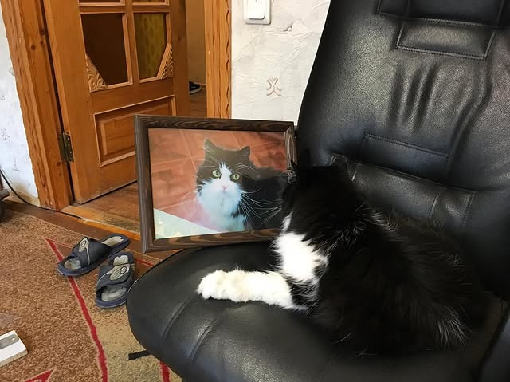
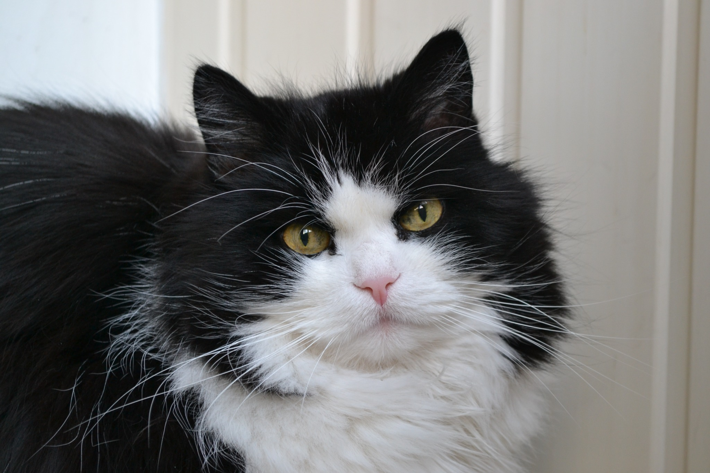
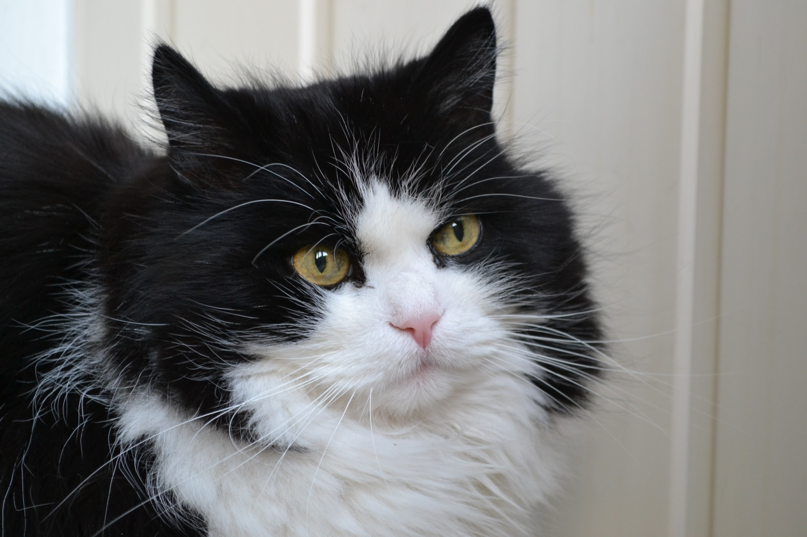
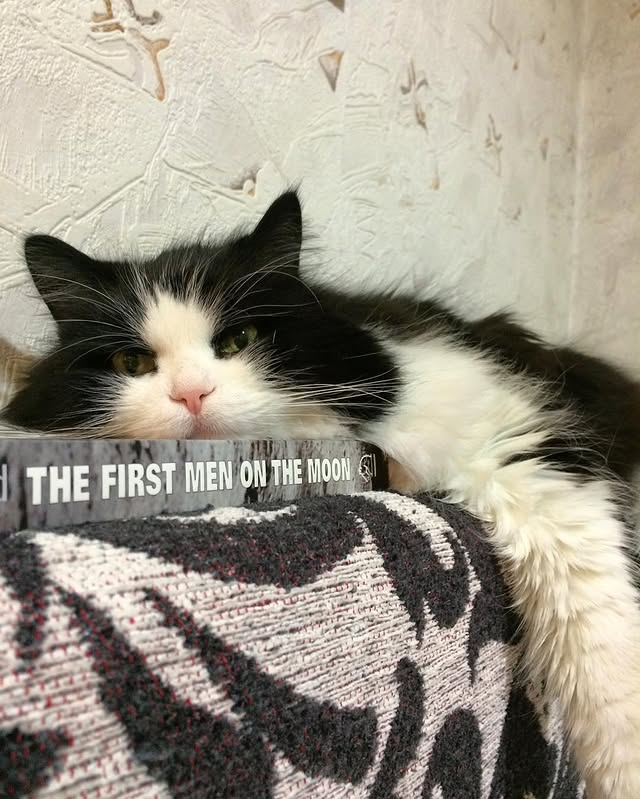
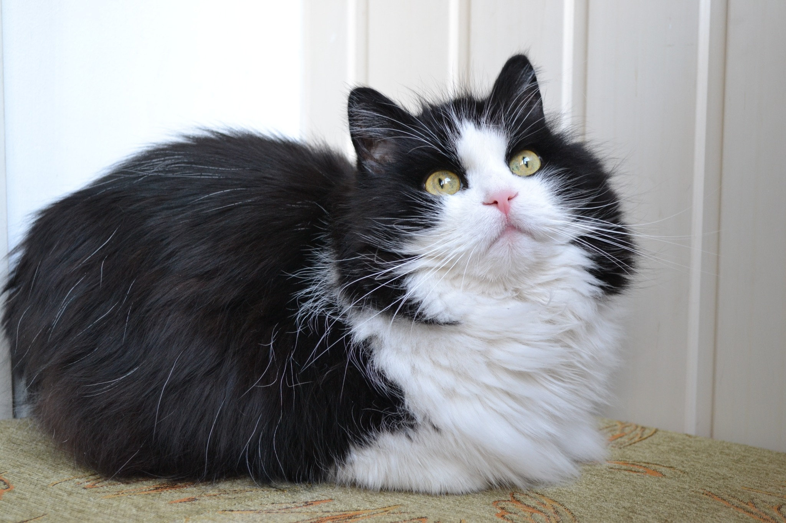
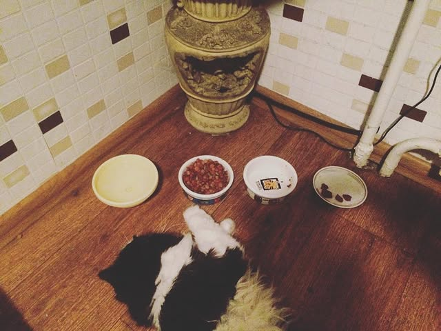
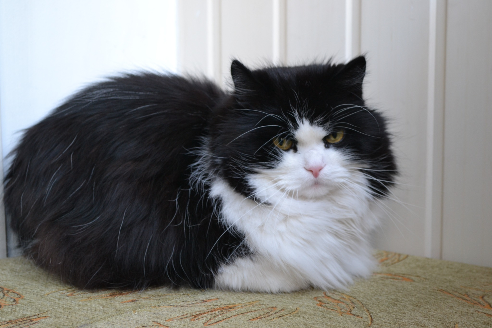
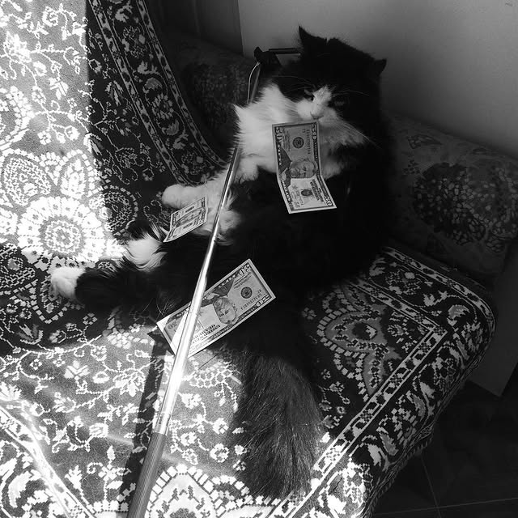
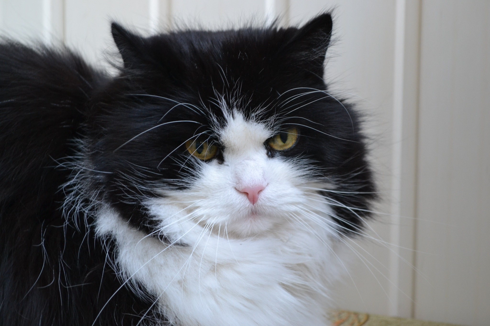
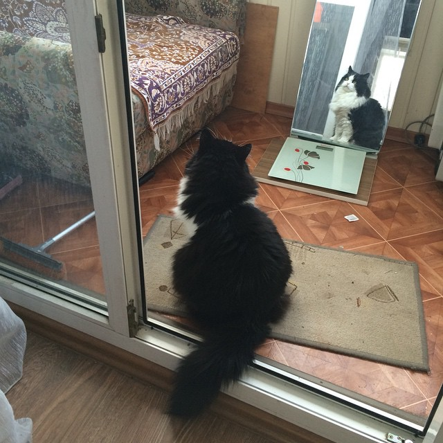
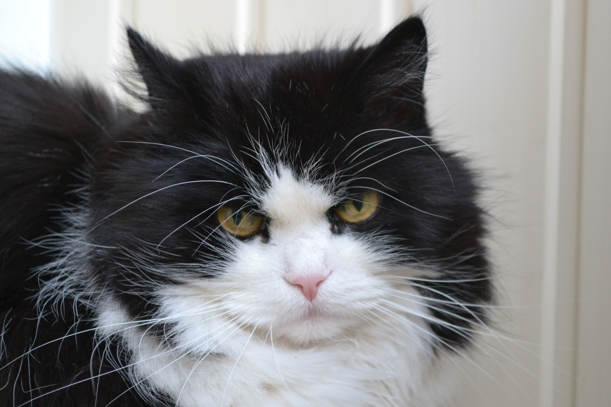
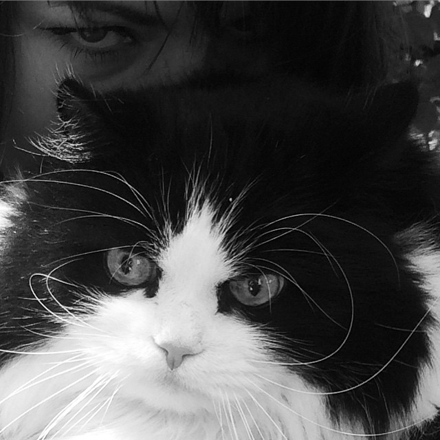
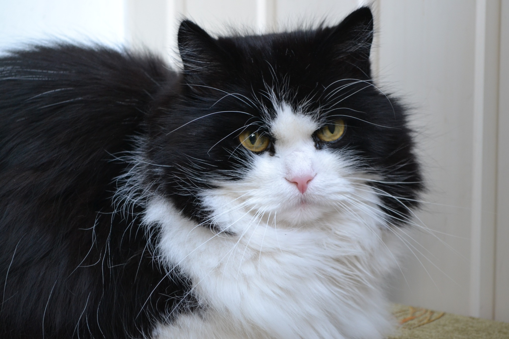
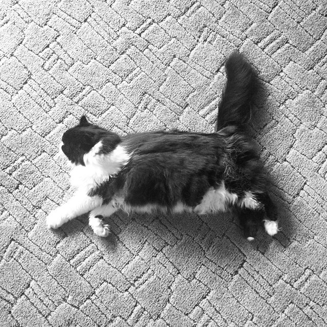
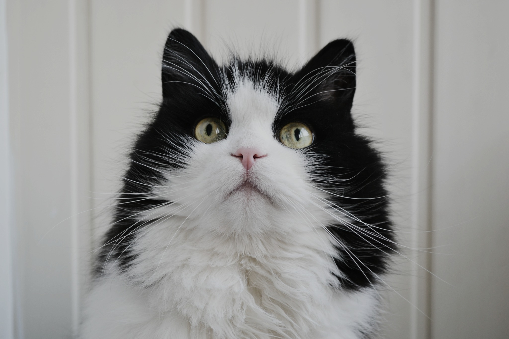
Фотографии из домашнего архива и старой ленты.
правила эксплуатации жилплощади
Короткая инструкция по квартире, где главным был кот.
Кузьмич ходил по квартире, заходил, уходил и заглядывал в комнаты. Маршрут не согласовывался. Проверяющий был один, зато с полным доступом.
Процесс приготовления еды проходил под его контролем. Решение комиссии было заранее известно, но процедуру всё равно требовалось соблюсти.
Кузьмича нельзя было тревожить. Причины не разглашались, апелляции не принимались.
У него была собственная царапалка. Право собственности подтверждалось на месте — документами служили когти.
Мурчал Кузьмич очень громко. Уровень сигнала сообщал всем в квартире: система работает.
Стоило человеку повернуться — Кузьмич уходил. Совместный сон держался на простом условии: человеку нельзя было шевелиться.
На лоджии Кузьмич занимал кресло и забирался под плед. Даже когда было жарко, дополнительное отопление оставалось в силе.
Чистые вещи после стирки оказывались на диване, а Кузьмич устраивался именно на них и добавлял свой слой шерсти. Прачечная закончила работу раньше инспектора.
Мой папа вычёсывал Кузьмичу шубу и гладил его. Кузьмич мог в ответ царапнуть лапой: сервис был востребован, но с характером.
Кузьмич любил сидеть под ёлкой. Огни гирлянды отражались в глазах — система наблюдения без дополнительных расходов.
Эти байки собраны из привычек Кузьмича. Реплики и события не добавлялись.
записи из старой ленты
Подписи к фотографиям @ignatgrob. Англоязычные здесь переведены.
восемь кадров · семейный архив
Фотографии Кузьмича. Без протокола и без повода.
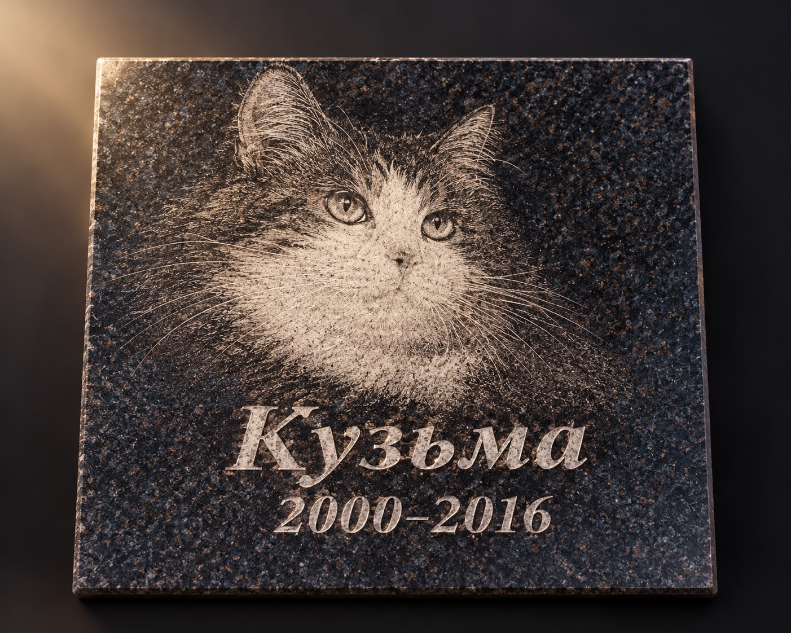
Кузьма · 2000–2016
Восемь — в резерве.